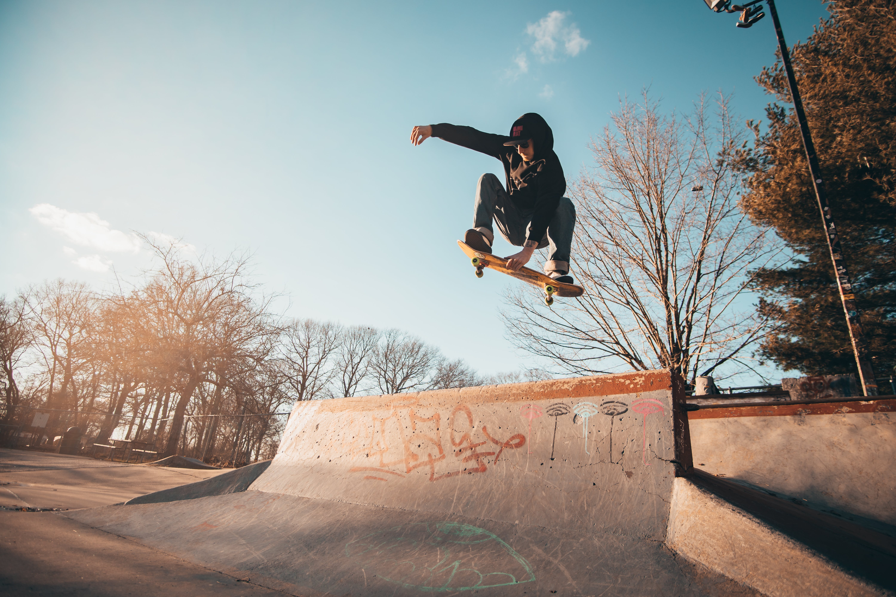
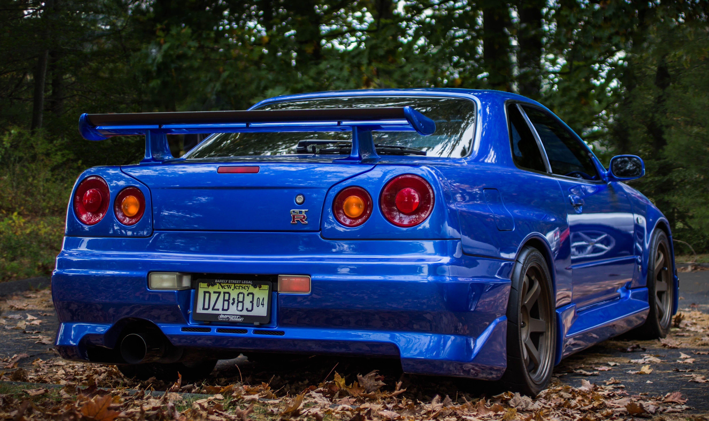

I am an ambitious Computer Science and Engineering student at the University of Califoria Merced. My academic journey has been fueled by a passion for technology and problem-solving. Beyond the classroom, I find inspiration in the world of JDM (Japanese Domestic Market) vehicles, appreciating their engineering precision and unique design. When I’m not immersed in code or debugging algorithms, you’ll find me on the streets, either skateboarding or playing soccer. These physical pursuits balance my cerebral endeavors and keep me grounded. My dream destination is Tokyo, Japan. The bustling cityscape, rich cultural heritage, and futuristic innovations beckon me. Whether exploring the neon-lit streets of Shibuya or savoring authentic ramen in a hidden alley, I yearn to experience it all. Join me on this exciting journey as I merge my technical prowess with my love for exploration. Let’s build something remarkable together!
